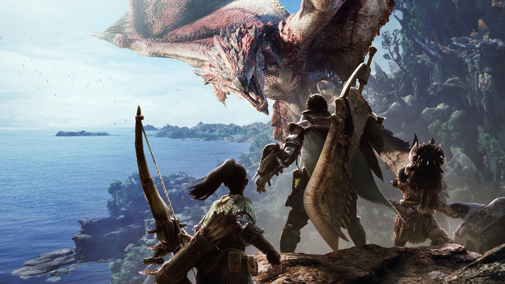

Algunos Ejemplos Serían...

Elden Ring

Cyberpunk 2077

Monster Hunter World
Elden Ring
Tipo de RPG: RPG de acción.
Características: Desarrollado por FromSoftware, "Elden Ring" combina elementos de RPG con una jugabilidad desafiante y un mundo abierto expansivo. Ofrece una narrativa rica y un diseño de mundo que premia la exploración y el combate táctico. Los jugadores pueden personalizar su personaje y mejorar sus habilidades, pero el enfoque principal está en la dificultad y la inmersión en un entorno oscuro y enigmático.
Monster Hunter World
Tipo de RPG: RPG de acción y caza.
Características: "Monster Hunter World" se centra en la caza de monstruos en un mundo vasto y detallado. Aunque se enfoca más en la acción y el combate, los jugadores desarrollan a sus personajes mediante la obtención de equipo y habilidades a medida que cazan y enfrentan criaturas enormes. La personalización del equipo y el progreso de personajes también forman parte integral de la experiencia, características típicas de los RPGs.
Cyberpunk 2077
Tipo de RPG: RPG de acción en primera persona.
Características: Desarrollado por CD Projekt Red, "Cyberpunk 2077" ofrece una narrativa profunda y un mundo abierto en el que los jugadores pueden tomar decisiones que afectan la historia y el desarrollo del personaje. Presenta un enfoque en la personalización del personaje, misiones variadas y un entorno futurista lleno de opciones de diálogo y decisiones morales, que son elementos centrales en los RPGs.
En resumen:
Elden Ring es un RPG de acción con un enfoque en la dificultad y la exploración.
Monster Hunter World mezcla elementos de RPG con acción y caza en un mundo abierto.
Cyberpunk 2077 es un RPG de acción con una narrativa compleja y un mundo futurista detallado.